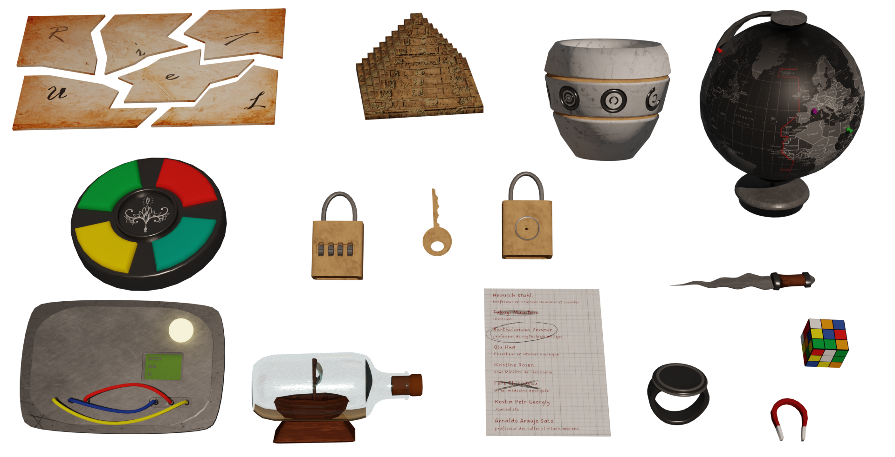

Project Astra : Chronos Terminal
Project introduction
Project Astra is a VR experience set in a future where Earth faces devastation from pollution and climate crises. As part of the A.S.T.R.A. team, players investigate the mysterious loss of contact with the Chronos space station, combining immersive exploration with a blend of grounded problem-solving and celestial discovery.
My Role
As the lead developer for Project Astra, I was responsible for designing and implementing nearly all of the game's mechanics. My focus so far has been on developing the core puzzle mechanics, particularly the two main challenges players will encounter. In the future, I will expand my work to include secondary mechanics, ensuring a cohesive and engaging gameplay experience throughout.
Gameplay mechanics
Thermal Vision :
Implemented using Shader Graph, this mechanic allows players to detect heat signatures, adding an
investigative layer to puzzle-solving.

X-Ray Vision (removed due to scope reduction) :
Previously developed with
Shader Graph, this mechanic provided the ability to see through objects, enhancing exploration and
problem-solving.
Head-Mounted Flashlight :
A functional flashlight mounted on the player's head, enabling better navigation in dark
environments and contributing to the immersive experience.
Circuit Breaker System :
An interactive mechanic where players restore power by
manipulating circuit breakers to solve electrical puzzles.
Valve System :
Players manipulate valves to adjust the temperature in pipes, unlocking access to new areas and
advancing the gameplay.
Heat Transmission (in development) :
This mechanic connects smaller puzzles
into a cohesive larger puzzle. It tracks the temperature in each pipe, enabling or disabling
subsequent puzzles based on the state of the previous ones. This system ensures logical progression
and a sense of interconnection between the different parts of the second puzzle.
EnigmeManager (technical overview) :
The EnigmeManager is a centralized system designed to simplify the management of the second puzzle,
divided into several smaller puzzles, while ensuring seamless integration through the heat
transmission mechanic. However, its design allows for easy adaptation to other scenarios.
Secondary Mechanics (to be added) :
Additional gameplay elements will be introduced to enrich the player experience and support
narrative progression.
Tools and Technologies
Unity : Main game engine, used to integrate VR features and create gameplay
interactions.
C# : For programming the mechanics of puzzles and interactions.
Oculus Quest 3 : VR headset used as the main platform for the game, providing an
immersive virtual reality experience.
Jira : Project management tool, used to organize tasks and track progress.
Discord : Team communication to coordinate the technical and creative aspects of the
project.
Github : Version control platform used to manage and collaborate on the project's
codebase, allowing team members to track changes, fix issues, and ensure code stability throughout
development.